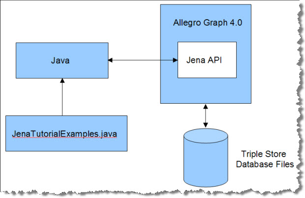
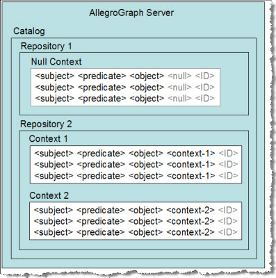
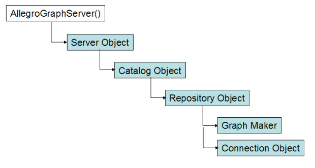

This is an introduction to the Jena client API to the AllegroGraph 4 RDFStore™ from Franz Inc.
The Java Jena API offers convenient and efficient access to an AllegroGraph server from a Java-based application. This API provides methods for creating, querying and maintaining RDF data, and for managing the stored triples.
The Java Jena API emulates the Jena Semantic Web Framework to make it easier to migrate from Jena to AllegroGraph.
|
The Jena client tutorial rests on a simple architecture involving AllegroGraph, disk-based data files, Java, and a file of examples called JenaTutorialExamples.java.
The AllegroGraph 4 Java client distribution contains the Java Jena API. The Java client communicates with the AllegroGraph Server through HTTP port 10035 in this tutorial. Java and AllegroGraph may be installed on the same computer, but in practice one server is shared by multiple clients running on different machines. Load JenaTutorialExamples.java into Java to view the tutorial examples. |
 |
Each lesson in JenaTutorialExamples.java is encapsulated in a Java method, named exampleN(), where N ranges from 0 to 21 (or more). The function names are referenced in the title of each section to make it easier to compare the tutorial text and the living code of the examples file. We use the same example numbers across multiple APIs to facilitate comparisons among them, even though differences in API features sometimes leaves a gap in the sequence of numbers.
The tutorial examples can be run on a Linux system, running AllegroGraph and the examples on the same computer ("localhost"). The tutorial assumes that AllegroGraph has been installed and configured using the procedure posted on this webpage. The Java Jena API and the Jena tutorial are bundled with the AllegroGraph Java Client.
We need to clarify some terminology before proceeding.
In the context of AllegroGraph Server:
|
 |
The first task is to have our AllegroGraph Server open a repository. This task is implemented in example1() from JenaTutorialExamples.java.
In example1() we build a chain of Java objects, ending in a "connection" object that lets us manipulate triples in a specific repository. The overall process of generating the connection object follows this diagram:
The example1() and example2() functions open a repository by building a series of client-side objects, culminating in a "Model" object. These objects can be passed to other methods in JenaTutorialExamples.java. The Model object is the unique interface to a specific RDF graph. |
 |
The example first connects to an AllegroGraph Server by providing the endpoint (host IP address and port number) of an already-launched AllegroGraph server. You'll also need a user name and password. This creates a client-side server object, which can access the AllegroGraph server's list of available catalogs through the server.listCatalogs() method:
public class JenaTutorialExamples {
static private final String SERVER_URL = "http://localhost:10035";
static private final String CATALOG_ID = "java-catalog";
static private final String REPOSITORY_ID = "jenatutorial";
static private final String USERNAME = "test";
static private final String PASSWORD = "xyzzy";
static private final String TEMPORARY_DIRECTORY = "";
static final String FOAF_NS = "http://xmlns.com/foaf/0.1/";
/**
* Creating a Repository
*/
public static AGGraphMaker example1(boolean close)
throws Exception {
// Tests getting the repository up.
println("\nStarting example1().");
AGServer server = new AGServer(SERVER_URL, USERNAME, PASSWORD);
println("Available catalogs: " + server.listCatalogs());
This is the output so far:
Starting example example1().
Available catalogs: [/, java-catalog, python-catalog]
These examples use either the default root catalog (denoted as "/") or a named catalog called "java-catalog".
In the next line of example1(), we use the server's getRootCatalog() method to create a client-side catalog object connected to AllegroGraph's default rootCatalog, as defined in the AllegroGraph configuration file. The catalog object has methods such as getCatalogName() and getAllRepositories() that we can use to investigate the catalogs on the AllegroGraph server. When we look inside the root catalog, we can see which repositories are available:
AGCatalog catalog = server.getCatalog(CATALOG_ID);
println("Available repositories in catalog "
+ (catalog.getCatalogName()) + ": "
+ catalog.listRepositories());
The corresponding output lists the available repositories. (When you run the examples, you may see a different list of repositories.)
Available catalogs: [/, java-catalog]
Available repositories in catalog java-catalog: []
In the examples, we are careful to delete previous state before continuing. You probably would not do this in your actual application:
catalog.deleteRepository(REPOSITORY_ID);
The next step is to create a client-side repository object representing the repository we wish to open, by calling the createRepository() method of the catalog object. We have to provide the name of the desired repository (REPOSITORY_ID in this case, which is bound to the string "jenatutorial").
AGRepository myRepository = catalog.createRepository(REPOSITORY_ID);
println("Got a repository.");
myRepository.initialize();
println("Initialized repository.");
A new or renewed repository must be initialized, using the initialize() method of the repository object. If you try to initialize a repository twice you get a warning message in the Java window but no exception.
Got a repository. Initialized repository.
The goal of all this object-building has been to create a client-side repositoryConnection object, which we casually refer to as the "connection" or "connection object." The repository object's getConnection() method returns this connection object. The function closeBeforeExit() maintains a list of connection objects and automatically cleans them up when the client exits.
AGRepositoryConnection conn = myRepository.getConnection();
closeBeforeExit(conn);
println("Got a connection.");
println("Repository " + (myRepository.getRepositoryID())
+ " is up! It contains " + (conn.size()) + " statements.");
The size() method of the connection object returns how many triples are present. In the example1() function, this number should always be zero because we deleted, recreated, and cleared the repository. This is the output in the Java window:
Got a connection.
Repository javatutorial is up! It contains 0 statements.
When using the Java Jena API, it is necessary to create a GraphMaker object on the connection. This object will let us create graphs in the connection's repository.
AGGraphMaker maker = new AGGraphMaker(conn);
println("Got a graph maker for the connection.");
Got a graph maker for the connection.
Whenever you create a new repository, you should stop to consider which kinds of triple indices you will need. This is an important efficiency decision. AllegroGraph uses a set of sorted indices to quickly identify a contiguous block of triples that are likely to match a specific query pattern.
These indices are identified by names that describe their organization. The default set of indices are called spogi, posgi, ospgi, gspoi, gposi, gospi, and i , where:
The order of the letters denotes how the index has been organized. For instance, the spogi index contains all of the triples in the store, sorted first by subject, then by predicate, then by object, and finally by graph. The triple id number is present as a fifth column in the index. If you know the URI of a desired resource (the subject value of the query pattern), then the spogi index lets you retrieve all triples with that subject as a single block.
The idea is to provide your respository with the indices that your queries will need, and to avoid maintaining indices that you will never need.
We can use the connection object's listValidIndices() method to examine the list of all possible AllegroGraph triple indices:
List<String> indices = conn.listValidIndices();
println("All valid triple indices: " + indices);
This is the list of all possible valid indices:
All valid triple indices: [spogi, spgoi, sopgi, sogpi, sgpoi, sgopi, psogi, psgoi, posgi, pogsi, pgsoi, pgosi, ospgi, osgpi, opsgi, opgsi, ogspi, ogpsi, gspoi, gsopi, gpsoi, gposi, gospi, gopsi, i]
AllegroGraph can generate any of these indices if you need them, but it creates only seven indices by default. We can see the current indices by using the connection object's listIndices() method:
indices = conn.listIndices();
println("Current triple indices: " + indices);
There are currently seven indices:
Current triple indices: [i, gospi, gposi, gspoi, ospgi, posgi, spogi]
The indices that begin with "g" are sorted primarily by subgraph (or "context"). If you application does not use subgraphs, you should consider removing these indices from the repository. You don't want to build and maintain triple indices that your application will never use. This wastes CPU time and disk space. The connection object has a convenient dropIndex() method:
println("Removing graph indices...");
conn.dropIndex("gospi");
conn.dropIndex("gposi");
conn.dropIndex("gspoi");
indices = conn.listIndices();
println("Current triple indices: " + indices);
Having dropped three of the triple indices, there are now four remaining:
Removing graph indices...
Current triple indices: [i, ospgi, posgi, spogi]
The i index is for deleting triples by using the triple id number. The ospgi index is sorted primarily by object value, which makes it possible to grab a range of object values as a single block of triples from the index. Similarly, the posgi index lets us reach for a block of triples that all share the same predicate. We mentioned previously that the spogi index lets us retrieve blocks of triples that all have the same subject URI.
As it happens, we may have been overly hasty in eliminating all of the graph indices. AllegroGraph can find the right matches as long as there is any one index present, but using the "right" index is much faster. Let's put one of the graph indices back, just in case we need it. We'll use the connection object's addIndex() method:
println("Adding one graph index back in...");
conn.addIndex("gspoi");
indices = conn.listIndices();
println("Current triple indices: " + indices);
Adding one graph index back in...
Current triple indices: [i, gspoi, ospgi, posgi, spogi]
In its default mode, example1() closes the maker and connection. It can optionally return the maker when called by another method, as will occur in several examples below. If you are done with these objects, closing them and shutting them down will free resources.
if (close) {
// tidy up
maker.close();
conn.close();
myRepository.shutDown();
return null;
}
return maker;
}
In example2(), we show how to create resources describing two people, Bob and Alice, by asserting individual triples into the repository. The example also retracts and replaces a triple. Assertions and retractions to the triple store are executed by 'add' and 'remove' methods belonging to the Model object. The Model object is created by the GraphMaker object, which we will obtain from example1(), above.
Before asserting a triple, we have to generate the URI values for the subject, predicate and object fields. The Java Jena API to AllegroGraph Server predefines a number of classes and predicates for the RDF, RDFS, XSD, and OWL ontologies. RDF.type is one of the predefined predicates we will use.
The example2() function begins by calling example1() to create the appropriate GraphMaker object, which is bound to the variable maker. We will use the GraphMaker to create a graph, and then a model object that is connected to the graph. We will need both objects in order to proceed.
public static AGModel example2(boolean close) throws Exception {
println("\nStarting example2().");
AGGraphMaker maker = example1(false);
AGGraph graph = maker.getGraph();
AGModel model = new AGModel(graph);
The next step is to begin assembling the resources we will need for the example. The model's createResource() method creates a Resource object based on a string URI. These are the resources for "Bob" and "Alice":
Resource alice = model
.createResource("http://example.org/people/alice");
Resource bob = model.createResource("http://example.org/people/bob");
Both Bob and Alice will have a "name" attribute. We also need to declare a class of Persons, so we can state that Bob and Alice are Persons.
Property name = model
.createProperty("http://example.org/ontology/name");
Resource person = model
.createResource("http://example.org/ontology/Person");
The name attributes will contain literal values. We have to generate the Literal objects from strings:
Literal bobsName = model.createLiteral("Bob");
Literal alicesName = model.createLiteral("Alice");
The next line prints out the number of triples currently in the repository.
println("Triple count before inserts: " + model.size());
Triple count before inserts: 0
Now we assert four triples, two for Bob and two more for Alice, using the model's add() method. Note the use of RDF.type, which is an attribute of the RDF object in http://jena.sourceforge.net/javadoc/index.html. This attribute is set the the URI of the rdf:type predicate, which is used to indicate the class of a resource.
// Alice's name is "Alice"
model.add(alice, name, alicesName);
// Alice is a person
model.add(alice, RDF.type, person);
// Bob's name is "Bob"
model.add(bob, name, bobsName);
// Bob is a person, too.
model.add(bob, RDF.type, person);
After the assertions, we count triples again (there should be four) and print out the triples for inspection. If we call model.listStatements() with no arguments, it dumps every triple in the graph. (We'll be a little more selective in example4().)
println("Added four triples.");
println("Triple count after inserts: " + (model.size()));
StmtIterator result = model.listStatements();
while (result.hasNext()) {
Statement st = result.next();
println(st);
}
This is the output at this point. We see four triples, two about Alice and two about Bob:
Triple count after inserts: 4
[http://example.org/people/bob, http://www.w3.org/1999/02/22-rdf-syntax-ns#type, http://example.org/ontology/Person]
[http://example.org/people/bob, http://example.org/ontology/name, "Bob"]
[http://example.org/people/alice, http://www.w3.org/1999/02/22-rdf-syntax-ns#type, http://example.org/ontology/Person]
[http://example.org/people/alice, http://example.org/ontology/name, "Alice"]
We see two resources of type "person," each with a literal name.
The next step is to demonstrate how to remove a triple. Use the remove() method of the model object, and supply a triple pattern that matches the target triple. In this case we want to remove Bob's name triple from the repository. Then we'll count the triples again to verify that there are only three remaining.
model.remove(bob, name, bobsName);
println("Removed one triple.");
println("Triple count after deletion: " + (model.size()));
Removed one triple.
Triple count after deletion: 3
Finally, we re-assert Bob's name so we can use it in subsequent examples, and we'll return the model object for other examples to use. Example2() ends with a condition that either closes the connection or passes the model object on to the next method for reuse.
model.add(bob, name, bobsName);
if (close) {
model.close();
graph.close();
maker.close();
return null;
}
return model;
}
SPARQL stands for the "SPARQL Protocol and RDF Query Language," a recommendation of the World Wide Web Consortium (W3C). SPARQL is a query language for retrieving RDF triples.
Our next example illustrates how to evaluate a SPARQL query. This is the simplest query, the one that returns all triples. Note that example3() continues with the four triples created in example2().
public static void example3() throws Exception {
AGModel model = example2(false);
println("\nStarting example3().");
try {
String queryString = "SELECT ?s ?p ?o WHERE {?s ?p ?o .}";
The SELECT clause returns the variables ?s, ?p and ?o. The variables are bound to the subject, predicate and object values of each triple that satisfies the WHERE clause. In this case the WHERE clause is unconstrained. The dot (.) in the fourth position signifies the end of the pattern.
Queries must be created by offering the queryString to the AGQueryFactory.create() method. This creates a query object. The query object is passed, in turn, to the AGQueryExecutionFactory.create() method where it is combined with the model for the graph you want to search. The resulting AGQueryExecution object has a method, execSelect(), that runs the query and returns a ResultSet.
AGQuery sparql = AGQueryFactory.create(queryString);
QueryExecution qe = AGQueryExecutionFactory.create(sparql, model);
try {
ResultSet results = qe.execSelect();
The ResultSet is an iterator that gives access to a sequence of bindingSets. Below we illustrate one (rather heavyweight) method for extracting the values from a binding set, indexed by the name of the corresponding column variable in the SELECT clause.
while (results.hasNext()) {
QuerySolution result = results.next();
RDFNode s = result.get("s");
RDFNode p = result.get("p");
RDFNode o = result.get("o");
System.out.println(" { " + s + " " + p + " " + o + " . }");
Starting example3().
{ http://example.org/people/alice http://example.org/ontology/name Alice . }
{ http://example.org/people/alice http://www.w3.org/1999/02/22-rdf-syntax-ns#type http://example.org/ontology/Person . }
{ http://example.org/people/bob http://www.w3.org/1999/02/22-rdf-syntax-ns#type http://example.org/ontology/Person . }
{ http://example.org/people/bob http://example.org/ontology/name Bob . }
The best practice is to close the various objects as soon as you finish using them, in order to free resources.
} finally {
qe.close();
}
} finally {
model.close();
}
}
The listStatements() method of the model object provides a simple way to perform unsophisticated queries. This method lets you enter a mix of required values and wildcards, and retrieve all matching triples. (If you need to perform sophisticated tests and comparisons you should use the SPARQL query instead.)
This is the example4() function of JenaTutorialExamples.java. It begins by calling example2() to create a model object and populate the jenarepository with four triples describing Bob and Alice.
public static void example4() throws Exception {
AGModel model = example2(false);
println("\nStarting example4().");
We're going to search for triples that mention Alice, so we have to create an "Alice" resource object to use in the search pattern. Think of this as Alice's URI.
Resource alice = model
.createResource("http://example.org/people/alice");
Now we search for triples with Alice's URI in the subject position. The "null" values are wildcards for the predicate and object positions of the triple. The RDFNode token indicates that we want to object of the triple to be either a resource URI or a literal value. The object value can sometimes be a string, which we are excluding from this pattern.
StmtIterator statements = model.listStatements(alice, null,
(RDFNode) null);
The listStatements() method returns a statement iterator object (bound to the variable "statements" in this case). This object can be iterated over, exposing one result statement at a time.
try {
while (statements.hasNext()) {
println(statements.next());
}
This prints out the two matching triples for "Alice."
Starting example4().
[http://example.org/people/alice, http://www.w3.org/1999/02/22-rdf-syntax-ns#type, http://example.org/ontology/Person]
[http://example.org/people/alice, http://example.org/ontology/name, "Alice"]
At this point it is good form to close the statements and model objects because they occupy memory.
} finally {
statements.close();
model.close();
}
}
The next example, example5(), illustrates some variations on what we have seen so far. The example creates and asserts typed literal values, including language-specific literals.
First, example5() obtains a model object from example2(). Then it clears the repository of all existing triples.
public static void example5() throws Exception {
AGModel model = example2(false);
println("\nStarting example5().");
model.removeAll();
For sake of coding efficiency, it is good practice to create variables for namespace strings. We'll use this namespace again and again in the following lines.
String exns = "http://example.org/people/";
The example creates new resources describing Alice and Ted. Apparently Bob was on vacation. We will use these resources in the subject field of the triples.
Resource alice = model.createResource("http://example.org/people/alice");
Resource ted = model.createResource(exns + "ted");
These are the four predicates used in the example: age, weight, favoriteColor, and birthdate. They are instantiated as Property objects. We would usually refer to these are predicates in AllegroGraph.
Property age = model.createProperty(exns,"age");
Property weight = model.createProperty(exns, "weight");
Property favoriteColor = model.createProperty(exns, "favoriteColor");
Property birthdate = model.createProperty(exns, "birthdate");
Favorite colors, declared as Literals in English (default) and French.
Literal red = model.createLiteral("Red");
Literal rouge = model.createLiteral("Rouge", "fr");
Age values, declared as INT, LONG, and untyped:
Literal fortyTwoInt = model.createTypedLiteral("42", XSDDatatype.XSDint);
Literal fortyTwoLong = model.createTypedLiteral("42", XSDDatatype.XSDlong);
Literal fortyTwoUntyped = model.createLiteral("42");
Birth date values, declared as DATE and DATETIME types.
Literal date = model.createTypedLiteral("1984-12-06", XSDDatatype.XSDdate);
Literal time = model.createTypedLiteral("1984-12-06T09:00:00", XSDDatatype.XSDdateTime);
Weights, written as floats, but one untyped and the other declared to be a float.
Literal weightUntyped = model.createLiteral("120.5");
Literal weightFloat = model.createTypedLiteral("120.5", XSDDatatype.XSDfloat);
The model object's createStatement() method assembles the elements of a triple, but does not yet add them to the repository. Here are Alice's and Ted's ages assembled into statements. (We gave Ted two age triples because Bob was on vacation. The triples have the same value cast into different types.)
Statement stmt1 = model.createStatement(alice, age, fortyTwoInt);
Statement stmt2 = model.createStatement(ted, age, fortyTwoLong);
Statement stmt3 = model.createStatement(ted, age, fortyTwoUntyped);
The Java Jena API to AllegroGraph Server uses the model.add() method for asserting triples into the repository. It can create triples from statements, or from URIs and literal values, as shown here.
model.add(stmt1);
model.add(stmt2);
model.add(stmt3);
model.add(alice, weight, weightFloat);
model.add(ted, weight, weightUntyped);
model.add(alice, favoriteColor, red);
model.add(ted, favoriteColor, rouge);
model.add(alice, birthdate, date);
model.add(ted, birthdate, time);
The RDF/SPARQL spec is very conservative when matching various combinations of literal values. The match and query statements below illustrate how some of these combinations perform. Note that this loop uses the listStatements() method to retrieve triples. We'll do SPARQL queries in a minute.
for (Literal obj : new Literal[] {null, fortyTwoInt, fortyTwoLong, fortyTwoUntyped, weightFloat, weightUntyped,
red, rouge}) {
println( "\nRetrieve triples matching " + obj + ".");
StmtIterator statements = model.listStatements(null, null, obj);
try {
while (statements.hasNext()) {
println(statements.next());
}
} finally {
statements.close();
}
}
The listStatements() method looks for all triples that have a specific value in the object position. It doesn't care which resource or which predicate are in play. The loop cycles through various typed and untyped Literals to see which triples match each request.
These are the results of the tests in this loop. The first iteration uses "null" as the object value. This is a wildcard value, and matches all the triples in the repository:
Retrieve triples matching null.
[http://example.org/people/ted, http://example.org/people/birthdate, "1984-12-06T09:00:00Z"^^http://www.w3.org/2001/XMLSchema#dateTime]
[http://example.org/people/alice, http://example.org/people/birthdate, "1984-12-06Z"^^http://www.w3.org/2001/XMLSchema#date]
[http://example.org/people/ted, http://example.org/people/favoriteColor, "Rouge"@fr]
[http://example.org/people/alice, http://example.org/people/favoriteColor, "Red"]
[http://example.org/people/ted, http://example.org/people/weight, "120.5"]
[http://example.org/people/alice, http://example.org/people/weight, "1.20500006E2"^^http://www.w3.org/2001/XMLSchema#float]
[http://example.org/people/ted, http://example.org/people/age, "42"]
[http://example.org/people/ted, http://example.org/people/age, "42"^^http://www.w3.org/2001/XMLSchema#long]
[http://example.org/people/alice, http://example.org/people/age, "42"^^http://www.w3.org/2001/XMLSchema#int]
[http://example.org/people/bob, http://example.org/ontology/name, "Bob"]
[http://example.org/people/bob, http://www.w3.org/1999/02/22-rdf-syntax-ns#type, http://example.org/ontology/Person]
[http://example.org/people/alice, http://www.w3.org/1999/02/22-rdf-syntax-ns#type, http://example.org/ontology/Person]
[http://example.org/people/alice, http://example.org/ontology/name, "Alice"]
What triples match "42" declared as an INT? [fortyTwoInt]
Retrieve triples matching 42^^http://www.w3.org/2001/XMLSchema#int.
[http://example.org/people/alice, http://example.org/people/age, "42"^^http://www.w3.org/2001/XMLSchema#int]
What triples match "42" declared as an LONG? [fortyTwoLong]
Retrieve triples matching 42^^http://www.w3.org/2001/XMLSchema#long.
[http://example.org/people/ted, http://example.org/people/age, "42"^^http://www.w3.org/2001/XMLSchema#long]
What triples match "42" untyped? [fortyTwoUntyped]
Retrieve triples matching 42.
[http://example.org/people/ted, http://example.org/people/age, "42"]
What triples match "120.5" declared as a FLOAT? [weightFloat]
Retrieve triples matching 120.5^^http://www.w3.org/2001/XMLSchema#float.
[http://example.org/people/alice, http://example.org/people/weight, "1.20500006E2"^^http://www.w3.org/2001/XMLSchema#float]
What triples match "120.5" untyped? [weightUntyped]
Retrieve triples matching 120.5.
[http://example.org/people/ted, http://example.org/people/weight, "120.5"]
What triples match "Red" as a simple string? [Red]
Retrieve triples matching Red.
[http://example.org/people/alice, http://example.org/people/favoriteColor, "Red"]
What triples match "Rouge" declared as a French string? [Rouge]
Retrieve triples matching Rouge@fr.
[http://example.org/people/ted, http://example.org/people/favoriteColor, "Rouge"@fr]
The next loop builds and evaluates a SPARQL query instead of using listStatements(). It also shows examples of putting typed values into the search criteria without creating Literal objects as an intermediate step. It also shows how to extract individual subject, predicate and object values from each returned triple.
for (String obj : new String[]{"42", "\"42\"", "120.5", "\"120.5\"", "\"120.5\"^^xsd:float",
"\"Rouge\"@fr", "\"Rouge\"", "\"1984-12-06\"^^xsd:date"}) {
println( "\nQuery triples matching " + obj + ".");
String queryString = "PREFIX xsd: <http://www.w3.org/2001/XMLSchema#> SELECT ?s ?p ?o WHERE {?s ?p ?o . filter (?o = " + obj + ")}";
AGQuery query = AGQueryFactory.create(queryString);
QueryExecution qe = AGQueryExecutionFactory.create(query, model);
try {
ResultSet results = qe.execSelect();
while (results.hasNext()) {
QuerySolution result = results.next();
RDFNode s = result.get("s");
RDFNode p = result.get("p");
RDFNode o = result.get("o");
println(" " + s + " " + p + " " + o);
}
What triples match "42" (which is an int). We get both ints and longs.
Query triples matching 42.
http://example.org/people/alice http://example.org/people/age "42"^^<http://www.w3.org/2001/XMLSchema#int>
http://example.org/people/ted http://example.org/people/age "42"^^<http://www.w3.org/2001/XMLSchema#long>
What triples match "\"42\"" (which is a string?)
Query triples matching "42".
http://example.org/people/ted http://example.org/people/age 42
What triples match "120.5" (a float)?
Query triples matching 120.5.
http://example.org/people/alice http://example.org/people/weight 1.20500006E2^^<http://www.w3.org/2001/XMLSchema#float>
What triples match "\"120.5\"" (a string)?
Query triples matching "120.5".
http://example.org/people/ted http://example.org/people/weight 120.5
What triples match"\"120.5\"^^xsd:float" (a float)?
Query triples matching "120.5"^^xsd:float.
http://example.org/people/alice http://example.org/people/weight 1.20500006E2^^<http://www.w3.org/2001/XMLSchema#float>
What triples match "\"Rouge\"@fr" (a French string)?
Query triples matching "Rouge"@fr.
http://example.org/people/ted http://example.org/people/favoriteColor Rouge@fr
What triples match "Rouge" (a string)?
Query triples matching "Rouge". [No matches. General string fails to match French string.]
In the following example, we use listStatements() to match a DATE object. We have used a DATE literal in the object position of the triple pattern:
println("\nRetrieve triples matching DATE object.");
StmtIterator statements = model.listStatements(null, null, date);
try {
while (statements.hasNext()) {
println(statements.next());
}
} finally {
statements.close();
}
Retrieve triples matching DATE object.
[http://example.org/people/alice, http://example.org/people/birthdate, "1984-12-06Z"^^http://www.w3.org/2001/XMLSchema#date]
Note the string representation of the DATE object in the following query.
StmtIterator statements = model.listStatements(null, null,
model.createTypedLiteral("1984-12-06",XSDDatatype.XSDdate));
Match triples having a specific DATE value.
[http://example.org/people/alice, http://example.org/people/birthdate, "1984-12-06Z"^^http://www.w3.org/2001/XMLSchema#date]
Let's try the same experiment with DATETIME:
StmtIterator statements = model.listStatements(null, null, time);
Retrieve triples matching DATETIME object.
[http://example.org/people/ted, http://example.org/people/birthdate, "1984-12-06T09:00:00Z"^^http://www.w3.org/2001/XMLSchema#dateTime]
And a DATETIME match without using a literal value object:
StmtIterator statements = model.listStatements(null, null,
model.createTypedLiteral("1984-12-06T09:00:00",XSDDatatype.XSDdateTime));
Match triples having a specific DATETIME value.
[http://example.org/people/ted, http://example.org/people/birthdate, "1984-12-06T09:00:00Z"^^http://www.w3.org/2001/XMLSchema#dateTime]
The Java Jena API client can load triples in either RDF/XML format or NTriples format.
Note: If you get a "file not found" error while running this example, it means that Java is looking in the wrong directory for the data files to load. Check the file paths in example6() and correct them if necessary. |
The RDF/XML file contains a short list of v-cards (virtual business cards), like this one:
<rdf:Description rdf:about="http://somewhere/JohnSmith/">
<vCard:FN>John Smith</vCard:FN>
<vCard:N rdf:parseType="Resource">
<vCard:Family>Smith</vCard:Family>
<vCard:Given>John</vCard:Given>
</vCard:N>
</rdf:Description>
The NTriples file contains a graph of resources describing the Kennedy family, the places where they were each born, their colleges, and their professions. A typical entry from that file looks like this:
<http://www.franz.com/simple#person1> <http://www.franz.com/simple#first-name> "Joseph" . <http://www.franz.com/simple#person1> <http://www.franz.com/simple#middle-initial> "Patrick" . <http://www.franz.com/simple#person1> <http://www.franz.com/simple#last-name> "Kennedy" . <http://www.franz.com/simple#person1> <http://www.franz.com/simple#suffix> "none" . <http://www.franz.com/simple#person1> <http://www.franz.com/simple#alma-mater> <http://www.franz.com/simple#Harvard> . <http://www.franz.com/simple#person1> <http://www.franz.com/simple#birth-year> "1888" . <http://www.franz.com/simple#person1> <http://www.franz.com/simple#death-year> "1969" . <http://www.franz.com/simple#person1> <http://www.franz.com/simple#sex> <http://www.franz.com/simple#male> . <http://www.franz.com/simple#person1> <http://www.franz.com/simple#spouse> <http://www.franz.com/simple#person2> . <http://www.franz.com/simple#person1> <http://www.franz.com/simple#has-child> <http://www.franz.com/simple#person3> . <http://www.franz.com/simple#person1> <http://www.franz.com/simple#profession> <http://www.franz.com/simple#banker> . <http://www.franz.com/simple#person1> <http://www.franz.com/simple#birth-place> <http://www.franz.com/simple#place5> . <http://www.franz.com/simple#person1> <http://www.w3.org/1999/02/22-rdf-syntax-ns#type> <http://www.franz.com/simple#person> .
Note that AllegroGraph can segregate triples into contexts (subgraphs) by treating them as quads. The fourth field contains the URI of a subgraph. The Jena GraphMaker object, however, explicitly creates subgraphs (by creating model objects). Each model object addresses the content of a specific subgraph. There is always an unnamed "default background graph" available, and you may create any number of named subgraphs to compliment it. It is important to address your queries to the right graph, of course.
In example6() we use the default background graph from example1(), which is initially empty, plus a second subgraph named "http://example.org#vcards". Note that it is traditional to name subgraphs using appropriate URIs.
public static AGGraphMaker example6() throws Exception {
AGGraphMaker maker = example1(false);
AGModel model = new AGModel(maker.getGraph());
AGModel model_vcards = new AGModel(maker.createGraph("http://example.org#vcards"));
Model addresses the default background graph. Model_vcards addresses a second subgraph where we will load v-card data.
The variables path1 and path2 are bound to the RDF/XML and NTriples files, respectively. You may have to redefine these paths depending on your platform and how you have set up the project. The data files are in the same directory as JenaTutorialExamples.java.
String path1 = "src/tutorial/java-vcards.rdf";
String path2 = "src/tutorial/java-kennedy.ntriples";
Both examples need a base URI as one of the required arguments to the asserting methods:
String baseURI = "http://example.org/example/local";
In the next step we use the read() method to load the vcard triples into the model_vcards subgraph:
model_vcards.read(new FileInputStream(path1), baseURI);
Then we use read() to load the Kennedy family tree into the background graph:
model.read(new FileInputStream(path2), baseURI, "N-TRIPLE");
Now we'll ask AllegroGraph to report on how many triples it sees in the null context and in the #vcards context:
println("After loading, model_vcards contains " + model_vcards.size()
+ " triples in graph '" + model_vcards.getGraph()
+ "'\n and model contains " + model.size()
+ " triples in graph '" + model.getGraph() + "'.");
The output of this report was:
After loading, model_vcards contains 16 triples in graph 'http://example.org#vcards'
and model contains 1214 triples in graph 'default-graph'.
Example6() concludes by returning the GraphMaker object so it can be passed on to simplify the creation/load phase of subsequent examples.
Example7() borrows the same triples we loaded in example6(), above, and runs two unconstrained retrievals. It retrieves the GraphMaker object from example6() and uses it to reacquire the model and model_vcards objects. The first uses model.listStatements() to print out the subject value and subgraph identifier of each triple found in the default background graph. We placed a limit on the output because otherwise it would flood the screen with more than a thousand Kennedy triples.
public static void example7() throws Exception {
AGGraphMaker maker = example6();
AGModel model = new AGModel(maker.getGraph());
AGModel model_vcards = new AGModel(maker.openGraph("http://example.org#vcards"));
println("\nMatch all and print subjects and graph (model)");
StmtIterator statements = model.listStatements();
for (int i = 0; i < 25 && statements.hasNext(); i++) {
Statement stmt = statements.next();
println(stmt.getSubject() + " " + stmt.getModel().getGraph());
}
Match all and print subjects and graph (model)
http://www.franz.com/simple#person1 default-graph
http://www.franz.com/simple#person1 default-graph
http://www.franz.com/simple#person1 default-graph
http://www.franz.com/simple#person1 default-graph... [and 21 more]
This loop prints out triples from the default graph only, because that is the only graph that model can access.
The following loop performs the same experiment using model_vcards.
println("\nMatch all and print subjects and graph (model_vcards)");
statements = model_vcards.listStatements();
for (int i = 0; i < 25 && statements.hasNext(); i++) {
Statement stmt = statements.next();
println(stmt.getSubject() + " " + stmt.getModel().getGraph());
}
statements.close();
Match all and print subjects and graph (model_vcards)
http://somewhere/JohnSmith/ http://example.org#vcards
http://somewhere/JohnSmith/ http://example.org#vcards
1 http://example.org#vcards
1 http://example.org#vcards
http://somewhere/RebeccaSmith/ http://example.org#vcards... [and 11 more]
In this case, the loop prints out only v-card triples from model_vcards. The two odd-looking triples are from "blank" nodes in the v-cards model.
The next examples show how to write triples out to a file in either NTriples format or RDF/XML format. The output of either format may be optionally redirected to standard output (the Java command window) for inspection.
Example example8() begins by obtaining a GraphMaker object from example6(). This means the repository contains Kennedy family tree triples in the the default graph. We'll create a new model object to give us access to the default graph:
public static void example8() throws Exception {
AGGraphMaker maker = example6();
AGModel model = new AGModel(maker.getGraph());
To write triples in NTriples format, call model.write(), which dumps all triples. You have to a give it an output stream, which could be either a file path or standard output. You must also tell model.write() which output format you want. In the first case we'll use N-TRIPLE format. The code below gives you the choice of writing to a file or to the standard-output window.
String outputFile = TEMPORARY_DIRECTORY + "temp.nt";
// outputFile = null;
if (outputFile == null) {
println("\nWriting n-triples to Standard Out instead of to a file");
} else {
println("\nWriting n-triples to: " + outputFile);
}
OutputStream output = (outputFile != null) ? new FileOutputStream(
outputFile) : System.out;
model.write(output, "N-TRIPLE");
output.close();
To write triples in RDF/XML format, the process is the same, except that you don't have to prompt model.write() with a format. The RDF format is the default for this method.
String outputFile2 = TEMPORARY_DIRECTORY + "temp.rdf";
// outputFile2 = null;
if (outputFile2 == null) {
println("\nWriting RDF to Standard Out instead of to a file");
} else {
println("\nWriting RDF to: " + outputFile2);
}
output = (outputFile2 != null) ? new FileOutputStream(outputFile2)
: System.out;
model.write(output);
output.close();
}
The write() method writes out all triples in a subgraph. This provides a convenient means for making local backups of sections of your RDF store.
Finally, if the objective is to write out a filtered set of triples, the following approach may be used. First capture the query results as a StmtIterator. Then add the statements to a new, empty model. Finally, use model.write() to dump all the statements of that model to a file to to standard output.
public static void example9() throws Exception {
AGGraphMaker maker = example6();
AGModel model = new AGModel(maker.getGraph());
StmtIterator statements = model.listStatements(null,RDF.type, (RDFNode)null);
Model m = ModelFactory.createDefaultModel();
m.add(statements);
m.write(System.out);
}
A namespace is that portion of a URI that precedes the last '#', '/', or ':' character, inclusive. The remainder of a URI is called the localname. For example, with respect to the URI "http://example.org/people/alice", the namespace is "http://example.org/people/" and the localname is "alice". When writing SPARQL queries, it is convenient to define prefixes or nicknames for the namespaces, so that abbreviated URIs can be specified. For example, if we define "ex" to be a nickname for "http://example.org/people/", then the string "ex:alice" is a recognized abbreviation for "http://example.org/people/alice". This abbreviation is called a qname.
In the SPARQL query in the example below, we see two qnames, "rdf:type" and "ex:alice". Ordinarily, we would expect to see "PREFIX" declarations in SPARQL that define namespaces for the "rdf" and "ex" nicknames. However, the RepositoryConnection and Query machinery can do that job for you. The mapping of prefixes to namespaces includes the built-in prefixes RDF, RDFS, XSD, and OWL. Hence, we can write "rdf:type" in a SPARQL query, and the system already knows its meaning. In the case of the 'ex' prefix, we need to instruct it. The setNamespace() method of the connection object registers a new namespace. In the example below, we first register the 'ex' prefix, and then submit the SPARQL query. It is legal, although not recommended, to redefine the built-in prefixes RDF, etc..
The example example11() begins by borrowing a connection object from example1(). Then we retrieve the repository object and its associated valueFactory.
public static void example11() throws Exception {
AGGraphMaker maker = example1(false);
AGModel model = new AGModel(maker.getGraph());
We need a namespace string (bound to the variable exns) to use when generating the alice and person URIs.
String exns = "http://example.org/people/";
Resource alice = model.createResource(exns + "alice");
Resource person = model.createResource(exns + "Person");
Now we can assert Alice's RDF:TYPE triple.
model.add(alice, RDF.type, person);
Now we register the exns namespace with the connection object, so we can use it in a SPARQL query. The query looks for triples that have "rdf:type" in the predicate position, and "ex:Person" in the object position.
model.setNsPrefix("ex", exns);
String queryString =
"SELECT ?s ?p ?o" +
"WHERE { ?s ?p ?o . FILTER ((?p = rdf:type) && (?o = ex:Person) ) }";
AGQuery query = AGQueryFactory.create(queryString);
QueryExecution qe = AGQueryExecutionFactory.create(query, model);
try {
ResultSet results = qe.execSelect();
while (results.hasNext()) {
println(results.next());
}
The output shows the single triple with its fully-expanded URIs. This demonstrates that the qnames in the SPARQL query successfully matched the fully-expanded URIs in the triple.
[s=http://example.org/people/alice;p=http://www.w3.org/1999/02/22-rdf-syntax-ns#type;o=http://example.org/people/Person]
It is worthwhile to briefly discuss performance here. In the current AllegroGraph system, queries run more efficiently if constants appear inside of the "where" portion of a query, rather than in the "filter" portion. For example, the SPARQL query below will evaluate more efficiently than the one in the above example. However, in this case, you have lost the ability to output the constants "http://www.w3.org/1999/02/22-rdf-syntax-ns#type" and "http://example.org/people/alice". Occasionally you may find it useful to output constants in the output of a 'select' clause; in general though, the above code snippet illustrates a query syntax that is discouraged.
SELECT ?s
WHERE { ?s rdf:type ex:person }
SPARQL provides alternatives to the standard SELECT query. Example example13() exercises these alternatives to show how AllegroGraph Server handles them using the Java Jena API.
The example begins by borrowing an AGGraphMaker object from example6(). From the maker object we can generate an AGModel object. This connects to an existing repository that contains vcard and Kennedy data. We'll need to register a Kennedy namespace to make the queries easier to read.
public static void example13() throws Exception {
AGGraphMaker maker = example6();
AGModel model = new AGModel(maker.getGraph());
model.setNsPrefix("kdy", "http://www.franz.com/simple#");
As it happens, we don't need the vcard data this time, so we'll remove it. This is an example of how to delete an entire subgraph (the vcards "context") using Jena:
maker.removeGraph("http://example.org#vcards");
The example begins with a SELECT query so we can see some of the Kennedy resources. Note the use of the qe.exectSelect() method to evaluate the query.
String queryString = "select ?s where { ?s rdf:type kdy:person} limit 5";
AGQuery query = AGQueryFactory.create(queryString);
QueryExecution qe = AGQueryExecutionFactory.create(query, model);
println("\nSELECT some persons:");
try {
ResultSet results = qe.execSelect();
while (results.hasNext()) {
println(results.next());
}
} finally {
qe.close();
}
Note that SELECT returns variable bindings. In this case it returns subject URIs of five people:
SELECT some persons:
[s=http://www.franz.com/simple#person1]
[s=http://www.franz.com/simple#person2]
[s=http://www.franz.com/simple#person3]
[s=http://www.franz.com/simple#person4]
[s=http://www.franz.com/simple#person5]
The ASK query returns a Boolean, depending on whether the triple pattern matched any triples. In this case we ran two tests; one seeking "John" and the other looking for "Alice." Note that the ASK query uses a different construction method than the SELECT query: qe.execAsk().
queryString = "ask { ?s kdy:first-name 'John' } ";
query = AGQueryFactory.create(queryString);
qe = AGQueryExecutionFactory.create(query, model);
try {
println("\nASK: Is there anyone named John? " + qe.execAsk());
} finally {
qe.close();
}
queryString = "ask { ?s kdy:first-name 'Alice' } ";
query = AGQueryFactory.create(queryString);
qe = AGQueryExecutionFactory.create(query, model);
try {
println("\nASK: Is there anyone named Alice? " + qe.execAsk());
} finally {
qe.close();
}
The output of this loop is:
ASK: Is there anyone named John? true ASK: Is there anyone named Alice? false
The CONSTRUCT query contructs new triples out of the matching values in the query. The point is that the query can bind variables from existing triples and then "construct" new triples by recombining the values. This query constructs new triples that use the kdy:has-grandchild predicate.
queryString = "construct {?a kdy:has-grandchild ?c}" +
" where { ?a kdy:has-child ?b . " +
" ?b kdy:has-child ?c . }";
query = AGQueryFactory.create(queryString);
qe = AGQueryExecutionFactory.create(query, model);
try {
Model m = qe.execConstruct();
Note that the CONSTRUCT query qe.execConstruct(), which returns a new model object. This model contains new triples that have not yet been added to the triple store. Use model.add() to put them in the store. Note that we are adding one model to another:
model.add(m); // add new triples to the store
} finally {
qe.close();
}
The DESCRIBE query returns another model, meaning all triples of the matching resources. It uses qe.execDescribe(). In this case we asked SPARQL to describe one grandparent and one grandchild. (This confirms that the kdy:has-grandchild triples successfully entered the triple store.)
queryString = "describe ?s ?o where { ?s kdy:has-grandchild ?o . } limit 1";
query = AGQueryFactory.create(queryString);
qe = AGQueryExecutionFactory.create(query, model);
try {
Model m = qe.execDescribe();
println("\nDescribe one grandparent and one grandchild:");
m.write(System.out);
} finally {
qe.close();
}
Printing the result model to standard output reveals that the "model" is expressed as RDF/XML. The actual output is too lengthy to show here, but one block confirms that the has-grandchild triples are present as expected:
<rdf:Description rdf:about="http://www.franz.com/simple#person2">
<j.0:has-grandchild rdf:resource="http://www.franz.com/simple#person44"/>
<j.0:has-grandchild rdf:resource="http://www.franz.com/simple#person76"/>
<j.0:has-grandchild rdf:resource="http://www.franz.com/simple#person42"/>
<j.0:has-grandchild rdf:resource="http://www.franz.com/simple#person51"/> ...
SPARQL Update queries can also be evaluated to modify the model/repository. A SPARQL Update can be executed as follows:
queryString = "insert data { kdy:person4 kdy:nickname 'Jack'}";
query = AGQueryFactory.create(queryString);
qe = AGQueryExecutionFactory.create(query, model);
try {
qe.execUpdate();
} finally {
qe.close();
}
The great promise of the semantic web is that we can use RDF metadata to combine information from multiple sources into a single, common model. The great problem of the semantic web is that it is so difficult to recognize when two resource descriptions from different sources actually represent the same thing. This problem arises because there is no uniform or universal way to generate URIs identifying resources. As a result, we may create two resources, Bob and Robert, that actually represent the same person.
This problem has generated much creativity in the field. One way to approach the problem is through inference. There are certain relationships and circumstances where an inference engine can deduce that two resource descriptions actually represent one thing, and then automatically merge the descriptions. AllegroGraph's inference engine can be turned on or off each time you run a query against the triple store. (Note that inference is turned off by default, which is the opposite of standard Jena behavior.)
In example example19(), we will create four resources: Bob, with son Bobby, and Robert with daughter Roberta.
First we have to set up the data. We begin by generating four new resources.
public static void example19() throws Exception {
AGGraphMaker maker = example1(false);
AGModel model = new AGModel(maker.getGraph());
Resource robert = model.createResource("http://example.org/people/robert");
Resource roberta = model.createResource("http://example.org/people/roberta");
Resource bob = model.createResource("http://example.org/people/bob");
Resource bobby = model.createResource("http://example.org/people/bobby");
The next step is to create URIs for the predicates we'll need (name and fatherOf), plus one for the Person class. // create name and child predicates, and Person class.The names of the four people will be literal values.
Property name = model.createProperty("http://example.org/ontology/name");
Property fatherOf = model.createProperty("http://example.org/ontology/fatherOf");
Resource person = model.createResource("http://example.org/ontology/Person");
// create literal values for names
Literal bobsName = model.createLiteral("Bob");
Literal bobbysName = model.createLiteral("Bobby");
Literal robertsName = model.createLiteral("Robert");
Literal robertasName = model.createLiteral("Roberta");
Robert, Bob and the children are all instances of class Person. It is good practice to identify all resources by an rdf:type link to a class.
// Robert, Bob, and children are peopleThe four people all have literal names.
model.add(robert, RDF.type, person);
model.add(roberta, RDF.type, person);
model.add(bob, RDF.type, person);
model.add(bobby, RDF.type, person);
// They all have names.Robert and Bob have links to the child resources:
model.add(robert, name, robertsName);
model.add(roberta, name, robertasName);
model.add(bob, name, bobsName);
model.add(bobby, name, bobbysName);
// robert has a child
model.add(robert, fatherOf, roberta);
// bob has a child
model.add(bob, fatherOf, bobby);
Now that the basic resources and relations are in place, we'll seed the triple store with a statement that "Robert is the same as Bob," using the owl:sameAs predicate. The AllegroGraph inference engine recognizes the semantics of owl:sameAs, and automatically infers that Bob and Robert share the same attributes. Each of them originally had one child. When inference is turned on, however, they each have two children.

Note that SameAs does not combine the two resources. Instead it links each of the two resources to all of the combined children. The red links in the image are "inferred" triples. They have been deduced to be true, but are not actually present in the triple store.
This is the critical link that tells the inference engine to regard Bob and Robert as the same resource.
// Bob is the same person as Robert
model.add(bob, OWL.sameAs, robert);
This is a simple listStatements() search asking for the children of Robert, with inference turned OFF. This is the default behavior of a model.
println("\nChildren of Robert, inference OFF");
printRows(model.listStatements(robert, fatherOf, (RDFNode) null));
The search returns one triple, which is the link from Robert to his direct child, Roberta.
Children of Robert, inference OFF
[http://example.org/people/robert, http://example.org/ontology/fatherOf, http://example.org/people/roberta]
In the AllegroGraph Java API, we can take one graph and turn inference on and off at will. In the Java Jena API, however, a model either permits inferencing or it doesn't. Therefore, to compare queries with and without inferencing, we'll need a second model. Fortunately, both "models" can address the same graph. The second model is not a duplicate graph, but a second interface to the same graph.
First we need a reasoning engine, which is an instance of AGReasoner. Then we combine the reasoner with the old model to create a new, inferencing model (called InfModel).
println("\nChildren of Robert, inference ON");
AGReasoner reasoner = new AGReasoner();
InfModel infmodel = new AGInfModel(reasoner, model);
The query is the same as before, but the results are different:
printRows(infmodel.listStatements(robert, fatherOf, (RDFNode)null));
Children of Robert, inference ON
[http://example.org/people/robert, http://example.org/ontology/fatherOf, http://example.org/people/roberta]
[http://example.org/people/robert, http://example.org/ontology/fatherOf, http://example.org/people/bobby]
Note that with inference ON, Robert suddenly has two children because Bob's child has been included. Also note that the final triple (robert fatherOf bobby) has been inferred. The inference engine has determined that this triple logically must be true, even though it does not appear in the repository.
We can reuse the Robert family tree to see how the inference engine can deduce the presence of inverse relationships.
Up to this point in this tutorial, we have created new predicates simply by creating a URI and using it in the predicate position of a triple. This time we need to create a predicate resource so we can set an attribute of that resource. We're going to declare that the hasFather predicate is the owl:inverseOf the existing fatherOf predicate.
The first step is to remove the owl:sameAs link, because we are done with it.
model.remove(bob, OWL.sameAs, robert);
We'll need a URI for the new hasFather predicate:
Property hasFather = model.createProperty("http://example.org/ontology/hasFather");
This is the line where we create a predicate resource. It is just a triple that describes a property of the predicate. The hasFather predicate is the inverse of the fatherOf predicate:
model.add(hasFather, OWL.inverseOf, fatherOf);
First, we'll search for hasFather triples, leaving inference OFF to show that there are no such triples in the repository:
println("\nPeople with fathers, inference OFF");
printRows(model.listStatements(null, hasFather, (RDFNode)null));
People with fathers, inference OFF
Now we'll turn inference ON. This time, the AllegroGraph inference engine discovers two "new" hasFather triples.
println("\nPeople with fathers, inference ON");
printRows(infmodel.listStatements(null, hasFather, (RDFNode)null));
People with fathers, inference ON
[http://example.org/people/roberta, http://example.org/ontology/hasFather, http://example.org/people/robert]
[http://example.org/people/bobby, http://example.org/ontology/hasFather, http://example.org/people/bob]
Both of these triples are inferred by the inference engine.
Invoking inference using the rdfs:subPropertyOf predicate lets us "combine" two predicates so they can be searched as one. For instance, in our Robert/Bob example, we have explicit fatherOf relations. Suppose there were other resources that used a parentOf relation instead of fatherOf. By making fatherOf a subproperty of parentOf, we can search for parentOf triples and automatically find the fatherOf triples at the same time.
First we should remove the owl:inverseOf relation from the previous example. We don't have to, but it keeps things simple.
model.remove(hasFather, OWL.inverseOf, fatherOf);
We'll need a parentOf URI to use as the new predicate. Then we'll add a triple saying that fatherOf is an rdfs:subPropertyOf the new predicate, parentOf:
Property parentOf = model.createProperty("http://example.org/ontology/parentOf");
model.add(fatherOf, RDFS.subPropertyOf, parentOf);
If we now search for parentOf triples with inference OFF, we won't find any. No such triples exist in the repository.
println("\nPeople with parents, inference OFF");
printRows(model.listStatements(null, parentOf, (RDFNode)null));
People with parents, inference OFF
With inference ON, however, AllegroGraph infers two new triples:
println("\nPeople with parents, inference ON");
printRows(infmodel.listStatements(null, parentOf, (RDFNode)null));
People with parents, inference ON
[http://example.org/people/robert, http://example.org/ontology/parentOf, http://example.org/people/roberta]
[http://example.org/people/bob, http://example.org/ontology/parentOf, http://example.org/people/bobby]
The fact that two fatherOf triples exist means that two correponding parentOf triples must be valid. There they are.
Before setting up the next example, we should clean up:
model.remove(fatherOf, RDFS.subPropertyOf, parentOf);
When you declare the domain and range of a predicate, the AllegroGraph inference engine can infer the rdf:type of resources found in the subject and object positions of the triple. For instance, in the triple <subject, fatherOf, object> we know that the subject is always an instance of class Parent, and the object is always an instance of class Child.
In RDF-speak, we would say that the domain of the fatherOf predicate is rdf:type Parent. The range of fatherOf is rdf:type Child.
This lets the inference engine determine the rdf:type of every resource that participates in a fatherOf relationship.
We'll need two new classes, Parent and Child. Note that RDF classes are always capitalized, just as predicates are always lowercase.
Resource parent = model.createResource("http://example.org/ontology/Parent");
Resource child = model.createResource("http://exmaple.org/ontology/Child");
Now we add two triples defining the domain and rage of the fatherOf predicate:
model.add(fatherOf, RDFS.domain, parent);
model.add(fatherOf, RDFS.range, child);
Now we'll search for resources of rdf:type Parent. The inference engine supplies the appropriate triples:
println("\nWho are the parents? Inference ON.");
printRows(infmodel.listStatements(null, RDF.type, parent));
Who are the parents? Inference ON.
[http://example.org/people/robert, http://www.w3.org/1999/02/22-rdf-syntax-ns#type, http://example.org/ontology/Parent]
[http://example.org/people/bob, http://www.w3.org/1999/02/22-rdf-syntax-ns#type, http://example.org/ontology/Parent]
Bob and Robert are parents. Who are the children?
println("\nWho are the children? Inference ON.");
printRows(infmodel.listStatements(null, RDF.type, child));
Who are the children? Inference ON.
[http://example.org/people/roberta, http://www.w3.org/1999/02/22-rdf-syntax-ns#type, http://exmaple.org/ontology/Child]
[http://example.org/people/bobby, http://www.w3.org/1999/02/22-rdf-syntax-ns#type, http://exmaple.org/ontology/Child]
Bobby and Roberta are the children.